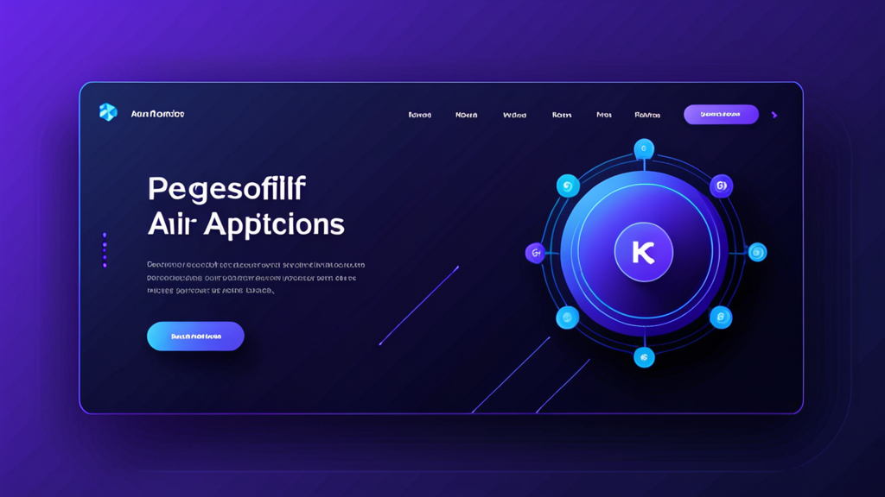

채용 지원서 작성을 위한 최고의 AI 양식 작성 도우미: 시간 절약과 오류 감소
토요일 오후, 하루에 열 번째 온라인 지원서에 경력 사항을 복사해 넣느라 지친 경험이 있다면 그 고통을 아실 겁니다. 손가락은 아프고, 전 회사 이름은 또 틀리게 입력하고요. 빈칸 하나하나가 인내심을 시험하는 작은 고통처럼 느껴집니다.
이런 반복적인 데이터 입력은 단지 짜증나는 일에 그치지 않습니다. 여러분에게 기회를 잃게 만들고 있어요. 연구에 따르면 구직자의 60%가 양식 작성 시간이 너무 오래 걸리면 지원을 중간에 포기한다고 합니다. 해결책은 더 빨리 입력하는 것이 아닙니다. 더 스마트하게 일하는 것입니다.
채용 지원서 작성을 위한 최고의 AI 양식 작성 도우미가 어떻게 몇 시간의 단순 작업을 몇 분으로 줄여주는지, 그리고 선택 시 무엇을 고려해야 하는지 알려드립니다.
왜 기존 자동 입력 방식은 채용 지원서에 부적합한가
브라우저의 자동 입력은 주소나 신용카드 정보에는 잘 작동합니다. 하지만 채용 지원서는 완전히 다른 영역입니다. 다음과 같은 정보를 요구하죠:
- 날짜, 담당 업무, 퇴사 사유가 포함된 여러 경력 사항
- GPA, 전공, 졸업 연도가 포함된 학력 정보
- 직무에 따라 달라지는 기술 목록
- "이 직무에 지원한 이유는 무엇인가요?"와 같은 개방형 질문
기존 자동 입력으로는 이걸 처리할 수 없습니다. 이름과 전화번호만 채우고, 15개의 빈칸을 남겨둔 채 여러분을 덩그러니 놔두죠. 결국 Word 문서에서 복사해서 붙여넣게 됩니다.
AI 양식 작성 도우미는 다르게 해결합니다. 단순히 정적인 텍스트를 저장하는 것이 아니라 맥락을 이해합니다.
진정으로 유용한 AI 양식 작성 도우미의 조건
모든 양식 작성 도우미가 동일하게 만들어지지는 않습니다. 유용한 도구와 일주일 후에 삭제하게 될 도구를 구분하는 기준을 알려드립니다.
표준 필드를 위한 프로필 기반 작성
핵심 기능은 간단합니다. 이름, 이메일, 전화번호, 주소, 경력 사항을 한 번 프로필로 만듭니다. 채용 지원서에 접속하면 확장 프로그램이 해당 필드를 인식하고 즉시 채워줍니다. 복사할 필요도, 오타 날 걱정도 없습니다.
이 기능만으로 지원서당 5~10분을 절약할 수 있습니다. 20곳에 지원한다면 3시간 이상 절약되는 셈이죠.
개방형 질문을 위한 AI 답변
진정한 마법은 텍스트 필드에서 일어납니다. 좋은 AI 양식 작성 도우미는 단순히 일반적인 텍스트를 집어넣지 않습니다. 질문을 분석하고 관련성 높은 답변을 생성합니다.
예를 들어:
- 질문: "직장에서 갈등을 해결했던 경험을 설명해 주세요."
- AI 답변: 저장된 경험을 바탕으로 STAR 기법을 사용해 짧은 단락 형식으로 정리하여 입력합니다.
제출 전에 답변을 수정할 수 있지만, 힘든 작업은 이미 끝난 겁니다.
개인정보 보호는 생각보다 중요합니다
채용 지원서를 작성할 때는 민감한 정보를 공유하게 됩니다: 주민등록번호(신원 조회용), 주소, 경력 사항 등. 이런 데이터가 통제할 수 없는 클라우드 서버로 전송되는 것은 원하지 않으실 겁니다.
채용 지원서 작성을 위한 최고의 AI 양식 작성 도우미는 모든 것을 로컬에서 처리합니다. 데이터는 브라우저에 그대로 머물러 있습니다. 업로드도, 타사 서버도, 데이터 유출 위험도 없습니다.
AI 양식 작성 도우미를 효과적으로 사용하는 방법
이 도구들의 최대 효과를 보려면 약간의 설정이 필요합니다. 효과적인 워크플로우를 소개합니다.
1단계: 완전한 프로필 구축
서두르지 마세요. 20분을 투자해 철저한 프로필을 만드세요:
- 전체 이름, 이메일, 전화번호, 주소
- 회사명, 날짜, 직무별 2
3개 불릿 포인트가 포함된 23개의 경력 사항 - 학교명, 학위, 졸업 연도가 포함된 학력 정보
- 10~15개의 관련 기술 목록
- 간단한 전문 요약(2~3문장)
더 자세히 입력할수록 AI 응답의 질이 높아집니다.
2단계: 반복 질문에 템플릿 사용
많은 지원서가 비슷한 질문을 합니다: "이 역할에 관심을 가지게 된 이유는 무엇인가요?" 또는 "희망 연봉은 얼마인가요?" 프로필에 3~4개의 템플릿 답변을 저장하세요. AI는 페이지에서 감지한 회사명이나 직무에 따라 이를 약간 변형할 수 있습니다.
3단계: 제출 전 항상 검토
AI는 훌륭하지만 완벽하지는 않습니다. 질문을 잘못 해석하거나 어색한 내용을 생성할 수도 있습니다. 제출 버튼을 누르기 전에 모든 AI가 작성한 답변을 읽어보세요. 지원서당 30초면 충분하며 당황스러운 실수를 방지할 수 있습니다.
4단계: 완료한 지원서 추적
일부 양식 작성 도우미는 사용한 사이트를 기록합니다. 이 기능은 같은 회사에 중복 지원하는 것을 방지해 줍니다. 지원하는 도구에 이 기능이 없다면 간단한 스프레드시트를 유지하세요.
채용 지원서 외에도: 다른 활용 사례
구직자가 가장 분명한 대상이지만, 같은 도구는 다른 반복적인 양식 작업에도 효과적입니다.
의료 사무직 직원
환자 접수 양식은 매번 같은 정보를 요구합니다: 이름, 보험사, 병력, 현재 복용 약물. AI 양식 작성 도우미가 저장된 프로필에서 이 정보를 채워 접수 시간을 10분에서 2분으로 줄여줍니다.
보험 청구 처리 담당자
청구 양식은 악명 높을 정도로 반복적입니다. 계약자 이름, 증권 번호, 사고 발생일, 손상 내용 설명. 양식 작성 도우미는 데이터 입력 오류를 줄이고 처리 속도를 높입니다.
프리랜서 및 컨설턴트
제안서와 계약서에는 이름, 사업장 주소, 서비스 설명, 가격 정보가 필요합니다. 매 고객마다 다시 입력하는 대신 AI가 기본 내용을 처리하도록 하고, 여러분은 맞춤형 부분에 집중하세요.
채용 담당자
지원자를 검토하고 평가 양식을 작성한다면, 자동 입력 확장 프로그램이 직무, 부서, 면접 날짜 같은 반복 필드에서 시간을 절약해 줍니다.
Chrome 자동 입력 확장 프로그램 선택 기준
AI 양식 작성 도우미를 찾고 있다면 다음 기준을 염두에 두세요.
로컬 처리
데이터가 기기를 떠나서는 안 됩니다. 모든 것을 브라우저 내에서 처리한다고 명시적으로 표시한 확장 프로그램을 찾으세요. 민감한 정보에는 이 조건이 필수입니다.
맞춤형 프로필
하나 이상의 프로필이 필요합니다. 채용 지원서용 프로필과 프리랜서 제안서용 프로필이 따로 있을 수 있습니다. 확장 프로그램이 이들 사이를 쉽게 전환할 수 있어야 합니다.
필드 감지 정확도
최고의 확장 프로그램은 웹사이트가 비표준 라벨을 사용하더라도 필드를 인식합니다. 사이트에서 "firstName", "fname", 또는 "given-name"으로 부르든 "이름" 필드를 채워야 합니다.
불필요한 권한 없음
일부 양식 작성 도우미는 모든 브라우징 데이터에 대한 접근 권한을 요청합니다. 이는 위험 신호입니다. 좋은 확장 프로그램은 양식 필드와 현재 작업 중인 페이지에만 접근하면 됩니다.
사람들이 자주 하는 실수
훌륭한 도구를 가지고도 스스로를 망칠 수 있습니다. 다음 함정을 피하세요.
AI 답변에 과도하게 의존
AI는 "왜 이 직무에 지원하나요?"라는 질문에 괜찮은 답변을 쓸 수 있지만, 여러분의 진정한 열정이나 회사에 대한 구체적인 지식을 담아내지는 못합니다. AI를 출발점으로 사용하고, 직접 개인화하세요.
프로필 업데이트 소홀
기술은 발전하고 경력은 변합니다. 몇 달마다 프로필을 업데이트하지 않으면 AI가 시대에 뒤떨어진 답변을 생성할 것입니다.
서식 무시
일부 지원 포털은 붙여넣은 텍스트의 서식을 제거합니다. AI 응답이 불릿 포인트나 굵은 글씨를 사용한다면 제출 후 엉망이 될 수 있습니다. 안전을 위해 일반 텍스트를 사용하세요.
간단 비교: AI 양식 작성 도우미 vs. 수동 입력
| 작업 | 수동 입력 | AI 양식 작성 도우미 |
|---|---|---|
| 기본 정보 (이름, 이메일) | 30초 | 1초 |
| 경력 사항 (3개 직무) | 5~7분 | 30초 |
| 개방형 질문 (3개 질문) | 10~15분 | 2분 |
| 검토 및 제출 | 2분 | 2분 |
| 지원서당 총 시간 | 17~24분 | 5분 |
지원서당 1219분의 차이는 빠르게 누적됩니다. 50곳에 지원하면 1016시간을 절약한 것입니다.
2025년에 이것이 더 중요한 이유
취업 시장은 경쟁이 치열합니다. 기업들은 AI를 사용해 이력서를 스크리닝하고 키워드가 일치하지 않는 지원자를 자동으로 거절합니다. 더 빨리 지원서를 제출할수록 더 많은 역할에 도전할 수 있습니다.
하지만 정확성 없는 속도는 무용지물입니다. 잘못된 날짜를 입력하거나 필드를 잘못 해석하는 AI 양식 작성 도우미는 오히려 기회를 해칠 것입니다. 따라서 부담이 적은 지원서 몇 개로 먼저 도구를 테스트해보는 것이 현명합니다.
선택하기
모든 양식 작성 도우미를 조사하는 데 몇 시간을 쓸 필요는 없습니다. 세 가지에 집중하세요: 개인정보 보호, 정확성, 설정 용이성. 확장 프로그램이 이 기준을 충족한다면 시도해볼 가치가 있습니다.
특히 구직자에게 채용 지원서 작성을 위한 최고의 AI 양식 작성 도우미는 표준 필드와 개방형 질문을 모두 처리하면서 데이터를 클라우드로 전송하지 않는 도구입니다. 속도와 개인정보 보호의 이 조합은 드물지만 존재합니다.
잘 만들어진 솔루션이 어떤지 보고 싶다면 Autofill AI를 확인해보세요. 완전히 브라우저 내에서 실행되는 AI를 사용합니다. 데이터가 서버에 닿지 않습니다. 저장된 프로필에서 표준 필드를 채우고 로컬 AI 또는 자체 API 키를 사용해 개방형 질문에 대한 답변을 생성할 수 있습니다. 시간을 낭비하는 반복적인 양식 작업을 위해 정확하게 설계되었습니다.
하지만 어떤 도구를 선택하든 원칙은 같습니다: 양식 작성을 필요한 악으로 취급하지 마세요. 지루한 부분은 자동화하세요. 진정으로 중요한 부분, 즉 면접에서 빛을 발하는 데 에너지를 아끼세요.